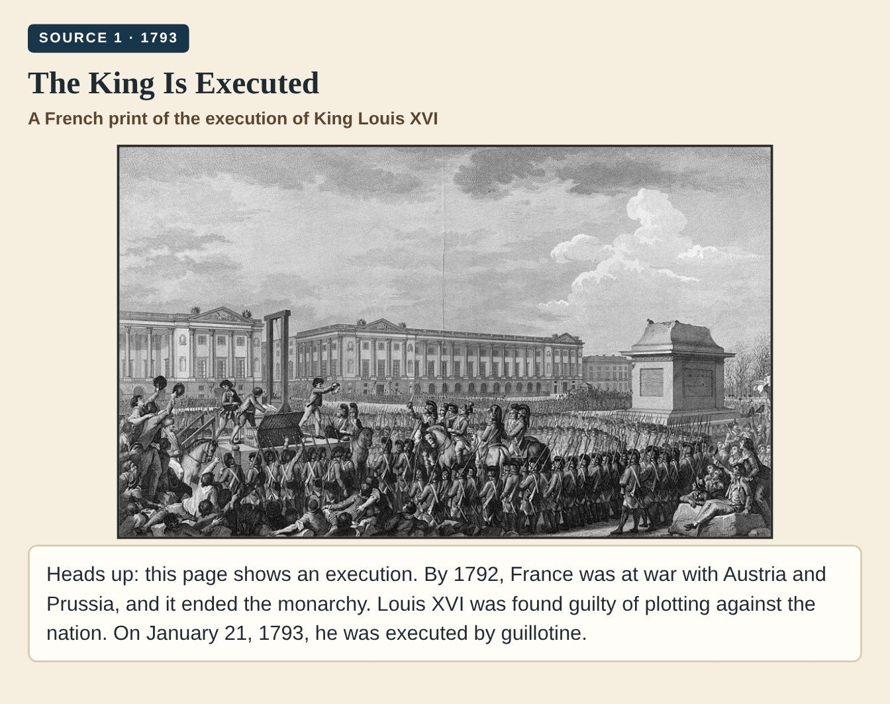

How it works: read the source pages → answer the question about today's big idea → read the fact file → write 1–2 sentences. Done = all parts green, then turn in at the bottom.
Word help (tap to open)
- Republic = a country with no king
- The Terror = 1793–1794, when France's leaders arrested and executed "enemies of the Revolution"
- Coup (KOO) = a sudden, illegal takeover of a government
- Radical = a huge change that goes to the roots
- Primary source = something made by people who lived at the time: a letter, a speech, a picture, a law

Click the page to make it bigger.
Turn in your work
Your work saves on this device, so you can come back later. Your teacher sees it after you turn it in.
Sources: print of the execution of Louis XVI (1793); Maximilien Robespierre, speech of February 5, 1794; French print of the new metric measures (1800); Jacques-Louis David, The Coronation of Napoleon (1807); Civil Code of the French (1804); U.S. Constitution (1787). Images public domain, via Wikimedia Commons.